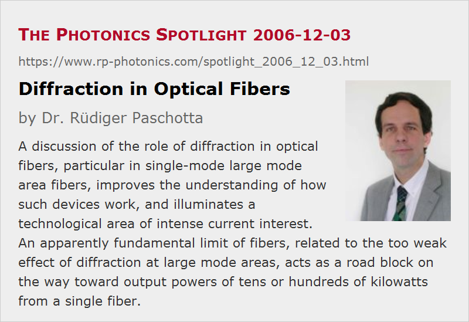

Diffraction in Optical Fibers
Posted on 2006-12-03 as a part of the Photonics Spotlight (available as e-mail newsletter!)
Permanent link: https://www.rp-photonics.com/spotlight_2006_12_03.html
Author: Dr. Rüdiger Paschotta, RP Photonics Consulting GmbH
Abstract: A discussion of the role of diffraction in optical fibers, particular in single-mode large mode area fibers, improves the understanding of how such devices work, and illuminates a technological area of intense current interest. An apparently fundamental limit of fibers, related to the too weak effect of diffraction at large mode areas, acts as a road block on the way toward output powers of tens or hundreds of kilowatts from a single fiber.

Ref.: encyclopedia articles on fibers, single-mode fibers, large mode area fibers, numerical aperture, bend losses, high power fiber lasers and amplifiers
After treating the role of diffraction in optical resonators in the previous article, I want to discuss how diffraction acts in optical fibers, again bringing up some useful thoughts for a better understanding of how these devices work, and at the same time illuminating a research area of great technological importance.
In a conventional single-mode fiber, the guided light is confined to a circular area with a diameter of the order of 10 μm, which roughly corresponds to the diameter of the fiber core. In free space, such strong confinement would lead to a large divergence angle, but in a waveguide such as a fiber the spatially varying refractive index has a focusing effect which exactly balances diffraction for certain field distributions, called the fiber modes. In a single-mode fiber, the waveguide effect is just strong enough to balance diffraction only for a single mode, but not for any more complicated field distributions. As divergence would obviously be stronger for such complicated field distributions, we should not be surprised that the (single) fiber mode has a simple shape.
As diffraction becomes stronger for smaller modes, fibers with small mode areas require a larger numerical aperture (NA) for proper guiding, while large mode area fibers require a small NA if the guidance of higher-order modes is to be prevented. It thus becomes clear that single-mode fibers with large mode area are based on the balance of two weak effects: weak diffraction, and correspondingly a weak guiding effect from the waveguide structure. Therefore, it is a quite basic (and hardly avoidable) consequence that any additional effects, such as those from bending the fiber (including unwanted microbends), can have a strong impact, e.g. in the form of bend losses. This is not just a caveat of a particular design, but rather a fundamental problem of all known fiber types, including photonic crystal fibers, even though the exact limits of strictly single-mode guidance vary a little depending on the chosen type of fiber design.
For stable single-mode guidance with very large mode areas, we would have to arrange a balance of two strong effects – stronger than diffraction is in this regime. And more than that: the balance should be so that it works only for a single (fundamental) mode. Diffraction nicely contributes this mode discrimination, as it becomes stronger for smaller modes, but for just this reason it becomes ineffective at large mode areas. Stronger diffraction for a large mode could in principle be achieved for a more complicated mode shape, but it is not clear how to arrange this in a regime of single-mode guidance: how then to prevent the simultaneous guidance for a smaller mode with simpler shape? On the other hand, a proper substitute for the effect of diffraction appears not to be known.
At least it doesn't appear to be clear that a clever invention, leading to single-mode fiber designs with extremely large mode areas, cannot exist in principle. I suppose that within the next few years we will either see a proof that such designs are impossible, or such designs themselves. In the latter case, the essential road block for the development of high power fiber lasers and amplifiers with single-mode output at tens or hundreds of kilowatts will be removed, and such fiber devices can again be considered as power-scalable, even in that regime. Already known approaches based on multimode fibers with high losses for higher-order modes cannot be considered to do this job, since they all don't allow for strongly increased mode areas, but only to slightly push the experienced limit.
P.S. In the case that such an invention or proof will be made by someone being inspired by this article, I would appreciate an acknowledgment, and (in the case of the invention) to obtain 0.1% of the generated revenue!
This article is a posting of the Photonics Spotlight, authored by Dr. Rüdiger Paschotta. You may link to this page and cite it, because its location is permanent. See also the RP Photonics Encyclopedia.
Note that you can also receive the articles in the form of a newsletter or with an RSS feed.
Questions and Comments from Users
Here you can submit questions and comments. As far as they get accepted by the author, they will appear above this paragraph together with the author’s answer. The author will decide on acceptance based on certain criteria. Essentially, the issue must be of sufficiently broad interest.
Please do not enter personal data here; we would otherwise delete it soon. (See also our privacy declaration.) If you wish to receive personal feedback or consultancy from the author, please contact him e.g. via e-mail.
By submitting the information, you give your consent to the potential publication of your inputs on our website according to our rules. (If you later retract your consent, we will delete those inputs.) As your inputs are first reviewed by the author, they may be published with some delay.
|  |
If you like this page, please share the link with your friends and colleagues, e.g. via social media:
These sharing buttons are implemented in a privacy-friendly way!